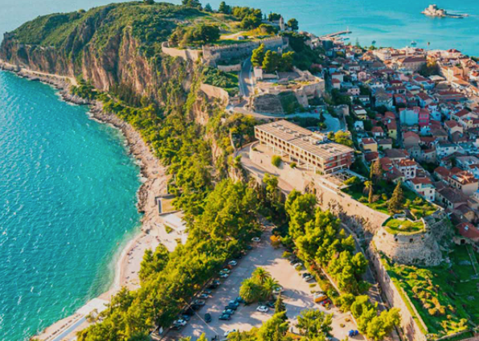

Греция находится в Южной Европе и занимает южную часть Балканского полуострова.
Территория страны делится на материковую часть, полуостров Пелопоннес и острова в Эгейском море (крупнейшие —
Крит, Лесбос, Эвбея).

Рельеф страны представляет собой чередование гористой местности и безлесых выровненных участков, живописных
плодородных долин, мелких бухт, заливов, островных территорий, карстовых воронок и пещер в западной части
Греции.